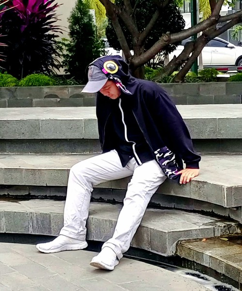

Profil Pribadi
Saya adalah seseorang yang memiliki semangat tinggi dalam menjalani hidup dan berusaha untuk selalu menjadi yang terbaik dari versi saya sebelumnya. Saya percaya bahwa dengan kerja keras, ketekunan, dan keberanian, kita dapat mencapai impian kita. (Status: Jomblo Fisabilillah)
Pengalaman
- Peraih Sertifikat Pelatihan AI dan Computer Security
- Pengalaman Kampus Merdeka Pertukaran Mahasiswa di BSI, Binus, dan LSPR selama 1 semester
- Terlibat dalam beberapa kegiatan delegasi mahasiswa kampus
Keterampilan
- Pemrograman: HTML, CSS, JavaScript, Python
- Desain Grafis: Adobe Photoshop, Adobe Illustrator
- Manajemen Proyek: Agile, Scrum